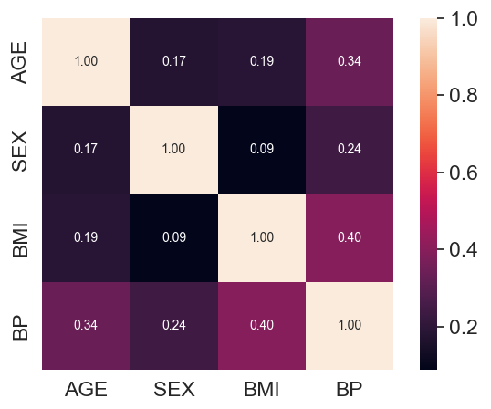
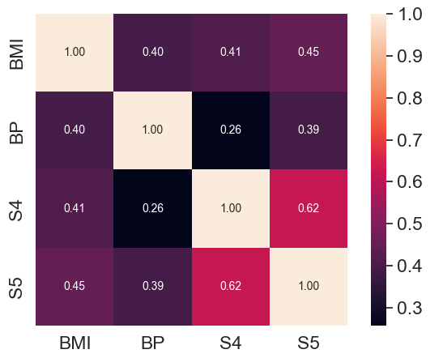

A base de dados do site https://www4.stat.ncsu.edu/~boos/var.select/diabetes.html hospeda um conjunto de dados de diabetes,
denominado "Diabetes Data", criado por Bradley Efron, Trevor Hastie, Iain Johnstone, e Robert Tibshirani.
Esse conjunto de dados de diabetes é frequentemente usado como exemplo em problemas de regressão e seleção de variáveis.
Ele contém informações sobre 442 pacientes com diabetes e 10 variáveis preditoras (idades, sexo, índice de massa corporal e outros)
relacionadas à progressão da doença. O objetivo é prever a progressão da diabetes com base nas variáveis fornecidas.
Descrição das Variáveis
age: Idade em anos
sex: Sexo
bmi: Índice de massa corporal
bp: Pressão arterial média
s1: tc, Colesterol sérico total
s2: ldl, Lipoproteínas de baixa densidade
s3: hdl, Lipoproteínas de alta densidade
s4: tch, Colesterol total / HDL
s5: ltg, log do nível sérico de triglicerídeos
s6: glu, Nível de açúcar no sangue
y: medida quantitativa da progressão da diabetes

Resultado da previsão:
Raiz do erro médio quadrático:
Coeficiente de determinação:

Resultado da previsão:
Raiz do erro médio quadrático:
Coeficiente de determinação:
5 primeiros dados do "Diabetes Data" para comparação
Aqui estão alguns dados da base de dados para comparar a performance entre os dois algoritmos de regressão linear.
Obs: No segundo algoritmo foi aplicado um pré-processamento nos dados da entrada utilizando regressão polinomial
devido à alta taxa de correlação entre os dados como mostrado no gráfico.